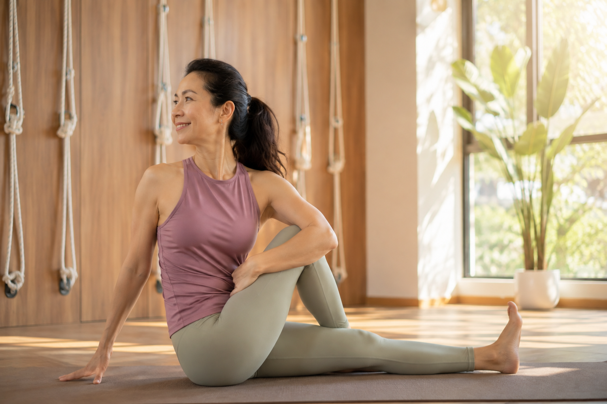

瑜伽跟單純伸展，差在哪個比較有效？

- 「每天拉筋」跟「固定練瑜伽」，聽起來都在做延展身體的事，但訓練邏輯不完全一樣。
- 單純伸展比較專注在單一方向的延展，瑜伽則整合了呼吸、動作轉換與身體感知。
- 這篇不是要你放棄伸展，而是幫你看清楚兩者各自能做到、做不到的部分。
- 看完可以想想自己目前的習慣，是不是缺了某一塊。
「我每天都有拉筋伸展，這樣是不是就跟練瑜伽差不多？」這個問題背後，其實藏著對兩者差異的模糊認識。這篇想用比較的方式，把單純伸展跟瑜伽練習，誠實拆開來看差在哪裡。
先用一張表，看清楚核心差異
| 單純伸展 | 瑜伽練習 | |
|---|---|---|
| 核心邏輯 | 針對特定肌肉群，拉長到一定角度 | 整合呼吸、動作轉換與身體感知，不只是拉長 |
| 呼吸角色 | 通常沒有特別強調呼吸配合 | 呼吸節奏是動作的一部分，引導身體進出姿勢 |
| 動作之間的關係 | 單一動作，各自獨立 | 動作之間有連貫轉換，牽涉平衡與控制 |
| 對力量的要求 | 較少要求同時出力 | 很多姿勢同時需要伸展與出力，兩者並存 |
從這張表可以看出，兩者不是「效果好壞」的差異，而是「處理的層面不同」。伸展比較像是針對單一目標的局部處理，瑜伽則是把身體當成一個整體系統在練習。
為什麼只做伸展，有時候感覺「有做但沒感覺」
很多人反映每天拉筋，柔軟度好像有進步，但整體的姿勢緊繃感卻沒有明顯改善。這通常是因為單純伸展處理的是「這條肌肉夠不夠長」，卻沒有同時處理「身體會不會用這個長度」。肌肉被動拉長之後，如果沒有搭配相應的力量與控制練習，身體不一定會把新的活動範圍整合進日常的動作模式裡，柔軟度數字進步了，實際使用起來卻感覺不到差異。
只做伸展，也有需要留意的風險
如果長期只追求關節活動範圍的擴大，卻沒有對應的力量與穩定度訓練，關節周圍的柔軟度可能超過了肌肉能控制的範圍，這種「鬆而不穩」的狀態，長期下來反而可能增加受傷的風險。這也是為什麼多數瑜伽練習不會只做單純的伸展，而是會搭配啟動、出力的動作，讓柔軟度跟穩定度一起成長。
壁繩瑜伽在伸展這件事上，多了什麼
壁繩瑜伽在伸展的部分，跟單獨做伸展最大的不同，在於繩帶提供的支撐與角度控制——你不需要靠自己的重量或蠻力硬拉到底，可以在繩帶的輔助下，更精準地找到適合自己的伸展深度，同時老師會在旁邊引導呼吸與身體感知，這是自己一個人做伸展時比較難兼顧到的部分。伸展的動作看起來相似，但練習的方式跟身體吸收的方式不一樣。
不需要放棄伸展，但可以想想少了什麼
單純伸展不是沒有用，維持基本的柔軟度本身就有價值，這篇不是要否定它。想提醒的是，如果你已經維持伸展習慣一陣子，卻覺得身體的緊繃感沒有跟著改善，也許少的不是「拉得不夠」，而是呼吸配合、力量整合這些伸展本身沒有涵蓋到的部分——這正是瑜伽練習比較擅長補上的地方。
本文為一般性體態與運動知識分享，非醫療診斷或治療。若伸展或活動時有明顯疼痛或不適，請先諮詢醫師或物理治療等專業醫療人員。
常見問題
我每天都有拉筋，這樣算不算有練到瑜伽的效果？
拉筋能維持一定的柔軟度，但如果沒有搭配呼吸引導、動作間的連貫轉換，效果通常比較侷限在單一方向的延展，跟瑜伽整合呼吸、身體感知的訓練邏輯不完全相同。
瑜伽是不是比較花時間，伸展比較有效率？
如果目標單純是維持柔軟度，伸展確實可能比較快速直接。但如果目標包含姿勢代償的調整、身體感知的建立，瑜伽的整合式練習通常能處理伸展單獨做不到的部分。
只做伸展，會不會有什麼風險？
單純追求關節活動範圍的伸展，如果缺乏對應的力量與控制，長期下來可能讓關節穩定度跟不上柔軟度，反而增加受傷風險。這也是為什麼瑜伽通常會搭配伸展與出力兩種元素。
壁繩瑜伽在伸展這方面，跟一般伸展有什麼不同？
壁繩的支撐讓伸展可以更精準地控制角度與深度，不需要靠蠻力硬拉，同時老師能在旁邊引導呼吸與身體感知，這是單獨做伸展時比較難自己達成的部分。